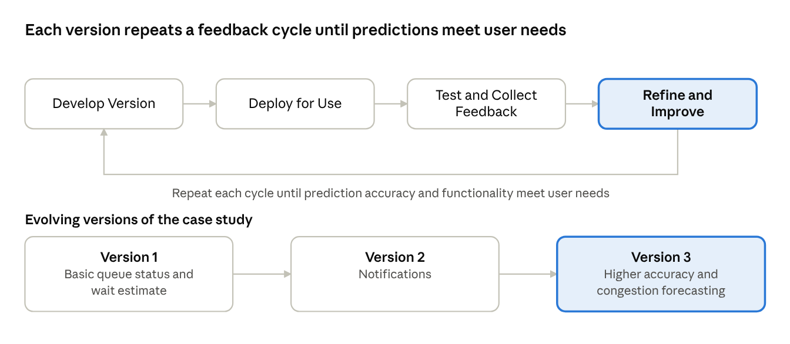
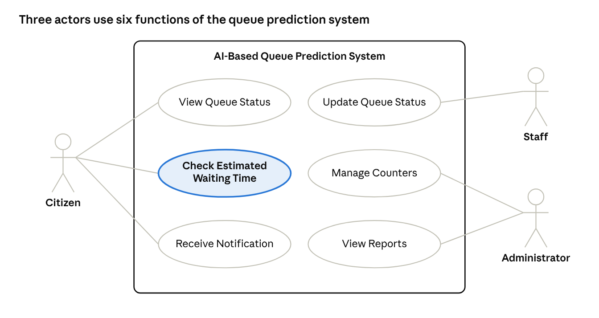
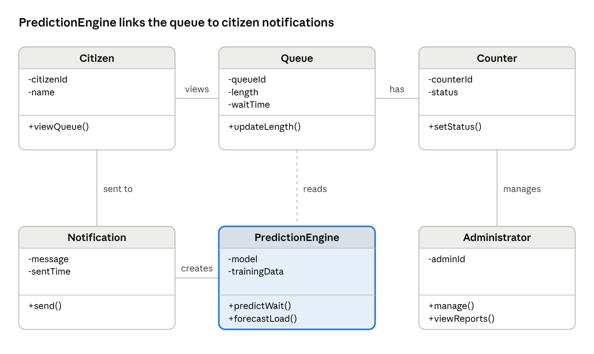
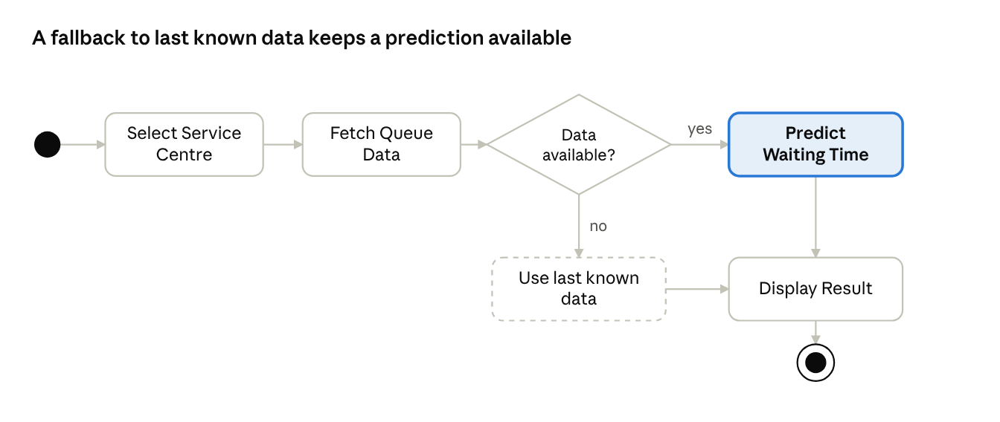
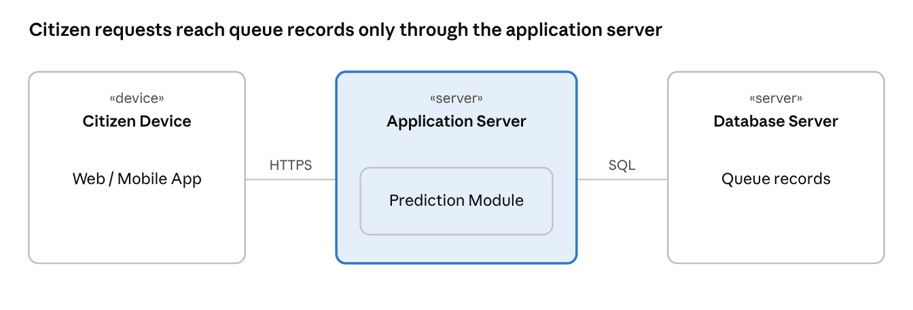

1.Introduction
1.1 Background of the Selected Problem
Government service centres deliver everyday services to citizens, such as certificates, licences, identity documents and utility services. These centres often see heavy and uneven footfall. Citizens arrive without knowing how long they will wait, queues grow at peak hours, waiting areas become overcrowded, and some counters sit idle while others are overloaded. Today, most centres have no software that tells citizens or staff how long a visit is likely to take.
1.2 Purpose and Scope
The AI-Based Queue Prediction System shows the current queue status, estimates waiting time, predicts congestion, and helps citizens plan their visits. It also helps staff and administrators manage counters.
1.3 Intended Users and Application Domain
The domain is the government service centre environment: citizens, service counters, staff, administrators, queue records (arrivals, service times, counter logs) and waiting-time information. Queue records flow into the prediction system, which produces waiting-time information for citizens, staff and administrators.
2.Problem Statement and Proposed Solution
2.1 Existing Problem and Limitations
- Long queues: citizens spend long periods waiting at counters.
- Uncertain waiting times: there is no reliable estimate of how long a visit will take.
- Overcrowding: waiting areas become congested at busy times.
- Inefficient counter allocation: counters are not matched to current demand.
- Peak-hour demand: sudden rushes are hard to anticipate and manage.
As a result, citizens lose time and face uncertainty, staff handle uneven workloads, and administrators lack data to plan counters.
2.2 Proposed Software Solution
A web/mobile software system that records live queue data, uses past queue records (arrival patterns and service times) to predict waiting time and congestion, and shows the results to citizens, staff and administrators. Staff update queue length and counter status; the system refreshes its prediction automatically and sends notifications when waiting times change.
2.3 Objectives and Expected Benefits
- Display current queue status.
- Estimate waiting times.
- Identify possible congestion.
- Help citizens plan their visits.
- Support staff and administrators in managing counters.
Expected benefits: less time lost by citizens, clearer expectations, less crowding in waiting areas, better use of counters and data-based planning by administrators.
3.Selection of SDLC Model
3.1 Selected Model: Evolutionary Model
The software is built as a first working version, deployed for use, tested, improved using feedback, and then released again as a better version. The cycle repeats until the product meets user needs.

The loop repeats until prediction accuracy and functionality meet user needs. The case study evolves in three versions:
Basic queue status and wait estimate
Notifications
Higher accuracy and congestion forecasting
3.2 Justification for Selecting the Model
| Model | Reason for comparison | Suitability |
|---|---|---|
| Waterfall | Sequential phases; requirements fixed early; feedback arrives late | Not suitable: queue patterns and user needs are not fully known at the start |
| Incremental | Planned parts delivered in turn; scope defined upfront; each part built once | Partly suitable: parts are not revisited and refined |
| Agile | Short sprints, continuous collaboration | Needs constant user involvement, which is difficult with citizens as users |
| Evolutionary (selected) | Versions evolve in repeated cycles; testing and feedback drive refinement | Best fit: prediction accuracy improves as real queue data and feedback are collected |
The prediction part of the system depends on real data. Its accuracy cannot be fixed at the design stage and has to be improved version by version, which matches the Evolutionary approach. The model also fits changing queue patterns, such as new peak hours or new services.
3.3 Major Phases
- Develop version: build the current version (for V1: queue status and basic wait estimate).
- Deploy for use: release it at a service centre.
- Test and collect feedback: verify updates and predictions against observed queues; collect feedback from citizens, staff and administrators.
- Refine and improve: correct problems, retrain the prediction model, add features, and begin the next version.
4.Requirements Analysis
4.1 Stakeholders and Requirements-Gathering Approach
| Stakeholder | Interest in the system |
|---|---|
| Citizens | Check queue status and estimated waiting time |
| Staff | Update queue length and counter availability |
| Administrators | Manage counters and view reports |
Elicitation techniques:
- Interviews: discuss needs with staff and administrators.
- Observation: watch real queue flow and counter operation.
- Questionnaires: collect citizens' waiting concerns and preferences.
- Record analysis: study existing queue records for arrival and service patterns.
4.2 Functional Requirements
| ID | Requirement | Description |
|---|---|---|
| FR1 | View queue status | Show live queue length per service centre |
| FR2 | Estimate waiting time | Show expected wait for the selected service |
| FR3 | Predict congestion | Flag busy periods and peak hours |
| FR4 | Update counter status | Staff set counter availability and queue length |
| FR5 | Send notifications | Alert citizens about wait changes |
| FR6 | Generate reports | Provide queue and counter performance summaries |
4.3 Non-Functional Requirements
| Attribute | Requirement |
|---|---|
| Usability | Simple, easy-to-use interface |
| Performance | Fast updates and responses |
| Reliability | Consistent, available estimates |
| Security | Role-based access and data protection |
| Scalability | Supports more centres and users |
5.Software Requirements Specification (SRS)
5.1 Purpose and Scope
This SRS describes a system that predicts waiting time and congestion at government service centres. It serves citizens, staff and administrators. Application processing, payments and document verification are excluded.
5.2 Intended Users and Major Features
- Citizens: view queue and estimated wait; receive notifications.
- Staff: update queue and counters.
- Administrators: manage counters and view reports.
5.3 System Requirements
- Functional: FR1 to FR6 as listed in Section 4.2.
- Non-functional: usability, performance, reliability, security and scalability as listed in Section 4.3.
- External interfaces: a web/mobile user interface; a database and a prediction module as software interfaces; communication over HTTPS with notifications sent to users.
5.4 Assumptions and Constraints
- Staff keep queue data current.
- Estimates are not guarantees.
- Prediction quality depends on the quality of queue records.
6.Usage Scenario / Use Case Description
6.1 Use Case 1: Check Estimated Waiting Time
Actor: Citizen
Preconditions: the citizen has access to the web/mobile app; the selected service centre has queue data available.
- The citizen selects a service centre.
- The system displays the current queue status.
- The system shows the estimated waiting time for the selected service.
- The citizen decides when to visit, and may choose to receive notifications.
Expected outcome: the citizen knows the likely wait and plans the visit, avoiding unnecessary waiting.
Alternate flow: if current data is not available, the system uses the last known data to predict the waiting time.
6.2 Use Case 2: Update Queue Status
Actor: Staff
Preconditions: the staff member is logged in with a staff role.
- Staff update the queue length.
- Staff update counter availability.
- The system refreshes the prediction using this latest data.
Expected outcome: citizens see updated waiting-time estimates, and queue data becomes available to the administrator for monitoring.
6.3 Use Case 3: Monitor and Manage Counters
Actor: Administrator
Preconditions: the administrator is logged in; queue data has been recorded.
Steps: monitor service performance, view reports, manage counter allocation.
Expected outcome: counters are matched to expected demand.
7.UML Diagrams
Click any diagram to enlarge.
7.1 Use Case Diagram

The system boundary is the AI-Based Queue Prediction System. The Citizen is linked to View Queue Status, Check Estimated Waiting Time and Receive Notification. The Staff member is linked to Update Queue Status. The Administrator is linked to Manage Counters and View Reports.
7.2 Class Diagram

Citizen views a Queue. A Queue has Counters. The PredictionEngine reads the Queue and creates Notifications, which are sent to the Citizen. An Administrator manages Counters.
| Class | Attributes | Methods |
|---|---|---|
| Citizen | citizenId, name | viewQueue() |
| Queue | queueId, length, waitTime | updateLength() |
| Counter | counterId, status | setStatus() |
| PredictionEngine | model, trainingData | predictWait(), forecastLoad() |
| Notification | message, sentTime | send() |
| Administrator | adminId | manage(), viewReports() |
7.3 Activity Diagram

The flow starts when the user selects a service centre. The system fetches queue data. If data is available, it predicts the waiting time; if not, it uses the last known data. The result is then displayed and the flow ends.
7.4 Deployment Diagram

The Citizen Device runs the web/mobile app and connects over HTTPS to the Application Server, which hosts the Prediction Module. The Application Server connects through SQL to the Database Server that stores the queue records.
8.Applicability of Agile Practices
8.1 Suitability of Agile
User feedback after each cycle can directly improve the interface, the notifications and the prediction accuracy. Requirements such as notification timing or report content are likely to change once staff and citizens use the system. Small, frequent releases also fit the Evolutionary model chosen in Section 3, since both depend on repeated cycles with feedback.
8.2 Selected Approach: Scrum
- Scrum roles: Product Owner (represents the service centre administration and citizens' needs), Scrum Master, Development Team.
- Scrum events: Sprint Planning, Daily Scrum, Sprint Review and Sprint Retrospective.
- Practices from Extreme Programming (XP), such as continuous testing and refactoring, are used alongside Scrum to keep the prediction module reliable.
8.3 Example Product Backlog Items
| Priority | Backlog item | Version |
|---|---|---|
| 1 | As a citizen, I want to view live queue status so that I can see how crowded a centre is | V1 |
| 2 | As a citizen, I want to see the estimated waiting time for my service | V1 |
| 3 | As staff, I want to update queue length and counter availability quickly | V1 |
| 4 | As a citizen, I want to receive notifications when waiting time changes | V2 |
| 5 | As an administrator, I want reports on queue and counter performance | V2 |
| 6 | As an administrator, I want congestion forecasts for peak hours | V3 |
8.4 Iterative Development and Feedback
Each sprint produces a working increment. At the Sprint Review, staff and administrators try the increment, and a sample of citizens give feedback through short questionnaires. Predicted waiting times are compared with observed waiting times, and the differences are reviewed in the Retrospective. The findings are added to the product backlog and the prediction model is refined in the next sprint.
9.Expected Outcomes, Limitations and Future Scope
- Clearer waiting times for citizens
- Better counter use and balanced staff workloads
- Less overcrowding in waiting areas
- Reports that help administrators plan counters
- Estimates depend on data quality; they are not guarantees
- Staff must update queue data on time
- Invalid or missing data must be handled without breaking the system
- Testing must cover updates, predictions, notifications and error handling
- Dedicated mobile app
- SMS alerts for citizens without smartphones
- Appointment booking
10.Conclusion
The proposed AI-Based Queue Prediction System addresses long queues, uncertain waiting times and inefficient counter allocation at government service centres by predicting waiting time and congestion and sharing it with citizens, staff and administrators. Software engineering concepts support its development: requirement analysis and the SRS define what the system must do; modular design (queue, prediction, notification and report modules) makes it easier to build and maintain; the Evolutionary model lets the system improve through repeated cycles; UML diagrams document the design; testing validates the system against real scenarios; and Agile Scrum practices bring in user feedback after every cycle. Together these help reduce waiting uncertainty at government service centres.
11.References
- Theory lecture notes.
- R. S. Pressman and B. R. Maxim, Software Engineering: A Practitioner's Approach, McGraw-Hill.
- I. Sommerville, Software Engineering, Pearson.
- K. Schwaber and J. Sutherland, The Scrum Guide (scrumguides.org).
12.Appendix
Appendix A: Consistency Summary
| Element | Used in this report |
|---|---|
| Case study | AI-Based Queue Prediction System for government service centres |
| SDLC model | Evolutionary (V1 → V2 → V3) |
| Agile approach | Scrum, with XP practices |
| UML diagrams | Use case, class, activity, deployment |
| Work products | SRS, architecture and design, UML diagrams, test cases and reports, user documentation, maintenance records |